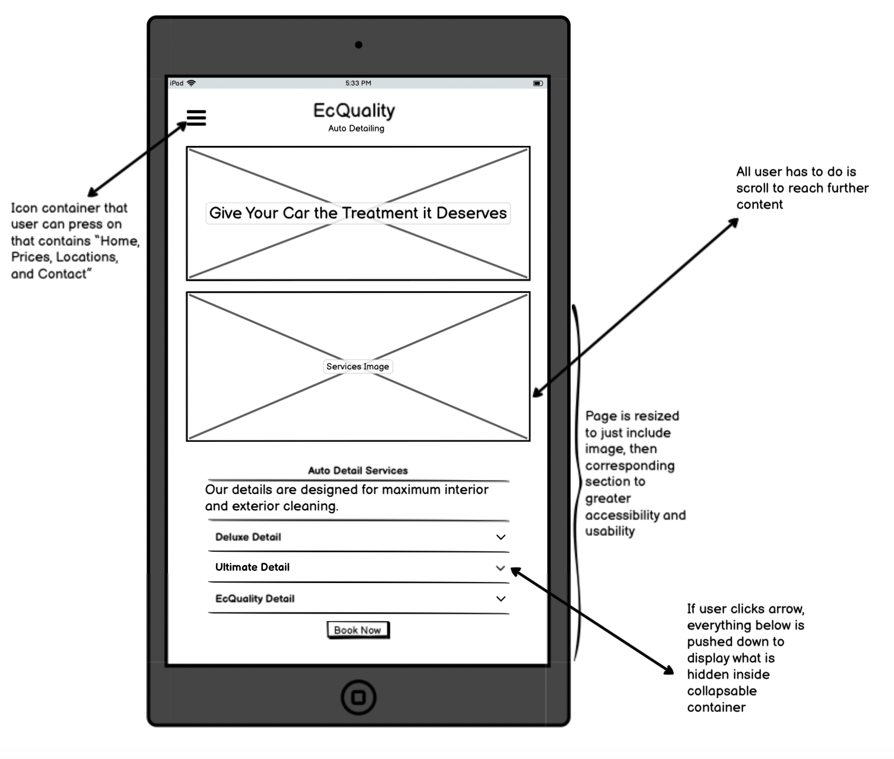

For too long, mechanic and autodetailing shops have been hampered by their lack of usability. Today, we will be analyzing and redesigning a page on EcQuality Auto Detailing's site to make it accessible to anyone and everyone!
Here is a snippet of the website we will be redesigning today:
In this section, we will be exploring the Usability, Learnability, Memorability, and Accessability issues that currently exist with the site.
- Not all buttons on the page are responsive ; the green “Join Now” buttons redirect the user, but the green “Purchase Now” buttons just seem to be screenshots that don’t redirect the user anywhere — making it hard for users to determine how to purchase one of the services
- Much of the text is not only inconsistent, but very small — making it hard to read
- For example, the descriptions on the Detail portion is significantly smaller than for the packages section for no apparent reason. The font should be consistent and large for all descriptions
- Sections are not divided in a consistent manner. For example, Section header sizes are different, color of font that divides sections are different, and there is no clear divider between sections
- When shrinking page, icons on top do not resize and are not put into an “icon container”, making harder to access them on a shrunken page or mobile format.
- As mentioned previously, the main issue with learnability comes with the buttons. Since not all the buttons are usable, the website requires the user to mess around with the interface to see what options are available to the user
- Fails to really abide by any sort of scanning pattern as its different for each section. A universal scanning pattern for the entire website would make the website much more memorable, and would allow users to traverse the site much more easily and pick and choose the products./services that they are interested in
- Too much text with repeated information. For example, some of the more expensive packages include the same features as the cheaper packages, but they want to repeat what is included. Displaying a clearer hierarchy within the text would make the content much more memorable
- Overall, the accessibility seem to be limited to contrast errors. On the page, there were over 42 contrast errors — indicating that users (especially users with trouble seeing) would have issues seeing the page, reading the text and navigating the page in general
- There were also quite a few heading levels skipped. Condensing the page a bit and removing these may make the page easier to access and interpret on first glance
- Surprisingly, the screen-reader test displayed that the page was indeed being read in the order that it was intended. On initial sight, the ordering seemed very unintuitive and structured poorly, so I was extremely surprised to come to this discovery
Now that we have addressed the issues with the site, here's how we intend to redesign it:

Now that we a template in place, lets create a high-fidelity mockup for all potential versions in which the webiste will be seen:
Here is a style guide for how we anticipate the website's dynamic tools (buttons, dropdown containers, etc) to look:
- Adjusts to changes in size of screen for all types of devices and all types of computer screens!
- WAVE-related errors are now virtually non-existent
- Website reads as intended
- With increased font size, the website resizes purportionally; surprisingly no weird spaces or divisions appear
- Website also works in different languages as well